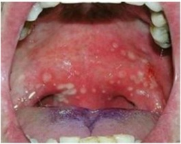
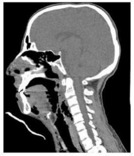
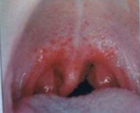

Adolescente feminina, 15 anos, chega ao consultório médico com odinofagia, fadiga e febre persistente há cinco dias. Nos últimos dois dias, ela notou piora da fadiga e surgimento de adenomegalias cervicais. No exame físico, aparenta estar doente e cansada, Tax. = 38,5°C, FR = 18irpm e FC = 80bpm. Nota-se aumento e hiperemia das amígdalas associada a presença de exsudato esbranquiçado. Na região cervical, apresenta múltiplos linfonodos na cadeia posterior, variando de 0,5 a 1,5cm de diâmetro, sendo algo dolorosos. O couro cabeludo não tem lesões. Ausculta cardíaca e pulmonar sem alterações. O baço é palpável 2cm abaixo margem costal esquerda e o fígado não é palpável. Exames laboratoriais: 15.000 leucócitos/mm³ (2% bastões; 25% neutró los; 50% de linfócitos, sendo 18% com características atípicas e 5% monócitos); hemoglobina = 13g/dL; hematócrito = 42%; volume corpuscular médio = 84 alanina aminotransferase = 100U/L (intervalo de referência = 7-56U/L); aspartato aminotransferase = 80U/L (intervalo de referência = 10-40U/L); bilirrubina total = 1,5mg/dL. Com esse quadro, o diagnóstico mais provável para essa paciente é:
Sobre a tonsilite aguda, assinale a alternativa CORRETA:
São achados comuns da mononucleose infecciosa, EXCETO:
Menina de 6 anos é trazida com história de dois dias de febre, dor de garganta, tosse e congestão nasal. Ao exame físico, está em regular estado geral, com febre de 39 °C, frequência cardíaca de 110 bpm e respiratória de 28 ipm, com hiperemia conjuntival bilateral sem secreção e com presença de adenomegalia pré-auricular e cervical anterior bilateral de 0,5 a 1 cm de diâmetro. A orofaringe está hiperemiada e com exsudato em tonsilas. O provável agente etiológico é o
Em relação ao quadro clínico da mononucleose, podemos afirmar que: I- a linfonodomegalia é um achado presente na quase totalidade dos pacientes; II- a esplenomegalia está presente em 50% dos pacientes; III- hepatomegalia é um achado menos frequente que a esplenomegalia no exame físico.
Criança com 6 anos de idade apresenta febre há 24 horas, associada a dor de garganta e tosse. Ao exame físico, apresenta-se em regular estado geral; orofaringe: hiperemia e exsudato em tonsilas, edema e eritema em úvula; gânglios submandibulares móveis, com 0,5 cm. Qual é a hipótese diagnóstica mais provável?
Adolescente, 16 anos, procurou atendimento na Unidade de Saúde por dor de garganta, febre e mal-estar há dois dias. Ao exame físico, apresentava febre de 38,9ºC, hiperemia de orofaringe, exsudato amigdaliano branco acinzentado e linfonodos palpáveis e dolorosos na região cervical anterior e posterior. Qual é o agente etiológico mais provável nessa situação clínica?
Escolar é trazido ao ambulatório e sua mãe relata que ele apresenta febre alta, dor abdominal e prostração. Exame físico: exsudato em amigdalas, linfadenomegalia cervical anterior unilateral. Os esquemas terapêuticos abaixo estão corretos, com exceção de:
Menor de doze anos apresenta quadro de febre alta (tax: 39ºC), faringoamigdalite pultácea, hepatoesplenomegalia, poliadenopatia generalizada, exantema micropapular difuso, que se iniciou há cinco dias. A principal hipótese diagnóstica e a conduta indicada neste caso incluem, respectivamente:
Assinale a alternativa correta:
Paciente de 1 ano de idade, recebeu apenas BCG e hepatite B. apresenta febre de 37,5º C, mal-estar, dor de garganta. No exame físico foi observado membrana acinzentada nas amígdalas, úvula e palato mole de difícil descolamento, e aumento dos nódulos linfáticos. O diagnóstico mais provável é:
Pré escolar de 5 anos é atendido em pronto atendimento infantil com história de faringite de início há 6 dias, com melhora da febre no terceiro dia de evolução. Há 24 horas apresentou febre de 40ºC, com dor de garganta intensa, trismo e disfagia, recusando todo alimento oferecido. Ao exame da orofaringe, apresenta hiperemia e hipertro a de amígdalas, mais intensa à direita, com desvio da úvula para o lado oposto. A conduta indicada no caso é:
Paciente feminina de 18 anos procura atendimento devido a dor de garganta e febre há três dias. Também apresenta cefaleia, dor abdominal, náuseas e êmese. Refere persistência de quadro de fadiga e mialgia, que iniciou duas semanas antes da primeira febre. Nega comorbidades ou uso de medicamentos. Nega relação desprotegida. Apresenta FC 96/min, PA 118/78 mmHg, FR 14/min, temperatura 38,0 °C, e SpO₂ 99% em ar ambiente. Ao exame físico, destacam-se hiperemia e exsudato em faringe, linfonodomegalia cervical, icterícia, hepatimetria = 15 cm e espaço de Traube ocupado. Exames laboratoriais demonstram: Hb = 11,4 g/dL; VG = 34%; VCM = 90,1 fL; HCM = 30,2 pg; CHCM = 33,9 g/dL; RDW = 17%; leucócitos = 10.012/mm³ ; linfócitos = 7.147/mm³ ; linfócitos atípicos = 4.211/mm³ ; plaquetas = 96.500/mm³ ; ALT = 128 U/L; AST = 133 U/L; FA = 174 U/L; GGT 55 U/L; BT = 3,4 mg/dL; BD = 0,9 mg/dL; LDH = 451 U/L. A pesquisa de anticorpos heteró los foi positiva (considere especi cidade = 100%). São consideradas complicações ou doenças associadas a essa hipótese diagnóstica, EXCETO:
Paciente feminina de 18 anos procura atendimento devido a dor de garganta e febre há três dias. Também apresenta cefaleia, dor abdominal, náuseas e êmese. Refere persistência de quadro de fadiga e mialgia, que iniciou duas semanas antes da primeira febre. Nega comorbidades ou uso de medicamentos. Nega relação desprotegida. Apresenta FC 96/min, PA 118/78 mmHg, FR 14/min, temperatura 38,0 °C, e SpO₂ 99% em ar ambiente. Ao exame físico, destacam-se hiperemia e exsudato em faringe, linfonodomegalia cervical, icterícia, hepatimetria = 15 cm e espaço de Traube ocupado. Exames laboratoriais demonstram: Hb = 11,4 g/dL; VG = 34%; VCM = 90,1 fL; HCM = 30,2 pg; CHCM = 33,9 g/dL; RDW = 17%; leucócitos = 10.012/mm³ ; linfócitos = 7.147/mm³ ; linfócitos atípicos = 4.211/mm³ ; plaquetas = 96.500/mm³ ; ALT = 128 U/L; AST = 133 U/L; FA = 174 U/L; GGT 55 U/L; BT = 3,4 mg/dL; BD = 0,9 mg/dL; LDH = 451 U/L. A pesquisa de anticorpos heteró los foi positiva (considere especi cidade = 100%). Considerando a principal hipótese diagnóstica, qual é o agente etiológico?
Menino de 10 anos de idade vai ao atendimento na UBS com queixa de odinofagia associada a febre alta há 2 dias. Nega coriza, tosse e obstrução nasal. Ao exame, orofaringe hiperemiada, com petéquias em palato e gânglio palpável em região submandibular, doloroso, ferroelástico, móvel, de 2 cm de diâmetro. Levando em consideração o caso exposto, assinale a alternativa que contem o diagnostico e tratamento mais adequados:
Maria Alice, 16 anos, é trazida pelo pai, pela manhã, à unidade de saúde. Ela se queixa há 2 dias de dor de garganta e desde então tem tido episódios de febre que chegam a 37,8º. É previamente hígida e tem o calendário vacinal em dia. Ao exame, está em bom estado geral, FR 16, FC 88, T 37,9º. Não há linfonodos palpáveis. Percebe-se tos- se durante o exame. Oroscopia com exsudato bilateral. Otoscopia sem alterações. Ausculta pulmonar livre. Considerando os dados fornecidos, assinale a alternativa CORRETA.
Em crianças menores de três anos, são comuns nos consultórios de pediatria afecções da faringe, no caso faringite e amigdalite. Nesta faixa etária, o agente causador mais prevalente é:
Considerando uma criança de 10 anos com diagnóstico de tonsilite bacteriana aguda, com teste para estrepto beta hemolítico do grupo A positivo, assinale a alternativa correta sobre o antibiótico, a dose e o tempo de tratamentos mais adequados.
Sobre o diagnóstico da tonsilite aguda, assinale a afirmativa correta.
São aspectos clínicos e epidemiológicos, sugestivos de faringotonsilite viral todos os abaixo, exceto
Assinale a alternativa incorreta a respeito da tonsilite aguda.
Paciente C.R.S., 16 anos de idade se apresenta na unidade de saúde com febre, faringite e fadiga, há dez dias. Iniciou Amoxicilina há cinco dias mas relata que não houve melhora. Teve febre todos os dias, dificuldade de deglutição e mal podia sair da cama. No exame físico, ela está febril e parece indisposta. Apresenta linfonodos cervicais aumentados, faringite exsudativa com petéquias no palato mole e erupção cutânea macular eritematosa leve no tronco e nos braços, na palpação abdominal observa-se esplenomegalia. Sobre as Síndromes de Mononucleose a alternativa incorreta é:
A apresentação de pacientes pediátricos, em pronto-atendimento, com quadro de infecções de vias aéreas superiores (IVAS) tem alta prevalência. Quanto a tonsilites e faringites agudas, assinale a alternativa correta.
Erico, 5 anos de idade, apresenta-se há 12 horas com quadro de febre elevada, tosse, odinofagia, dor abdominal, diarreia e cefaleia. Ao exame físico: exsudato em tonsilas, enantemas, adenomegalia cervical não dolorosa, hiperemia conjuntival e rouquidão. Erico deve ser tratado inicialmente com:
Criança de dois anos, sexo feminino, é levada à consulta por apresentar febre alta há 10 dias (três episódios diários com temperatura axilar média de 39 graus), além de odinofagia. Ao exame físico: edema palpebral, exsudato amigdaliano, adenomegalia cervical anterior e posterior, fígado palpável a 3,5cm do RCD e baço a 2,5cm do RCE. O exame laboratorial indicado para confirmação do diagnóstico é:
Criança, seis anos de idade, há dois dias com dor de garganta, odinofagia e febre (39ºC). Nega tosse, coriza ou obstrução nasal. Observa-se aumento e hiperemia de amígdalas, hiperemia e edema da úvula, presença de petéquias em palato mole e adenomegalia cervical anterior dolorosa. Sem outras alterações ao exame físico. Nesse momento, a conduta propedêutica MAIS ADEQUADA é solicitar:
Menina, 6 anos, chega na Unidade de Emergência com quadro clínico de febre alta há cinco dias, disfagia e sialorreia. Nos últimos dois dias, vem queixando-se de dor na região cervical posterior e mãe percebeu alteração da voz. Exame físico: Regular estado geral, T= 39°C, FR= 34 irpm, FC= 140 bpm, tempo de enchimento capilar= 2 segundos, adenomegalia cervical anterior esquerda, móvel, diâmetro 3 cm, sem sinais inflamatórios; Orofaringe: di culdade de abertura da cavidade oral; Neurológico: rigidez cervical presente. O DIAGNÓSTICO É:
Vicente 4 anos é trazido por sua mãe a consulta por apresentar febre maior que 39ºC há 2 semanas. Ao exame físico apresenta exsudato amigdaliano com petéquias em palato, adenomegalia cervical anterior e posterior, edema palpebral bilateral, fígado palpável a 4 cm do rebordo costal direito e baço a 3 cm do rebordo costal esquerdo. Qual sua hipótese diagnóstica?
Um paciente de 5 anos de idade é levado ao pronto atendimento com queixas de odinofagia e febre não aferida de início há três dias. Ao exame físico, constatou-se FC = 101 bpm, FR = 18 irpm, saturação de oxigênio = 100%, ausculta pulmonar normal, otoscopia normal bilateralmente, oroscopia com presença de exsudato amigdaliano branco-amarelo. O pediatra de plantão realiza o diagnóstico de amigdalite bacteriana. Quanto ao caso clínico apresentado e tendo em vista os conhecimentos médicos correlatos, julgue o item a seguir. A presença de dor abdominal e vômitos contrariaria fortemente o diagnóstico firmado.
Um paciente de 5 anos de idade é levado ao pronto atendimento com queixas de odinofagia e febre não aferida de início há três dias. Ao exame físico, constatou-se FC = 101 bpm, FR = 18 irpm, saturação de oxigênio = 100%, ausculta pulmonar normal, otoscopia normal bilateralmente, oroscopia com presença de exsudato amigdaliano branco-amarelo. O pediatra de plantão realiza o diagnóstico de amigdalite bacteriana. Quanto ao caso clínico apresentado e tendo em vista os conhecimentos médicos correlatos, julgue o item a seguir. A penicilina G benzatina, em dose única, é um tratamento aceitável.
Um paciente de 5 anos de idade é levado ao pronto atendimento com queixas de odinofagia e febre não aferida de início há três dias. Ao exame físico, constatou-se FC = 101 bpm, FR = 18 irpm, saturação de oxigênio = 100%, ausculta pulmonar normal, otoscopia normal bilateralmente, oroscopia com presença de exsudato amigdaliano branco-amarelo. O pediatra de plantão realiza o diagnóstico de amigdalite bacteriana. Quanto ao caso clínico apresentado e tendo em vista os conhecimentos médicos correlatos, julgue o item a seguir. A identificação de estreptococo beta-hemolítico, em teste rápido de amostra de orofaringe, confirmaria o diagnóstico.
Um paciente de 5 anos de idade é levado ao pronto atendimento com queixas de odinofagia e febre não aferida de início há três dias. Ao exame físico, constatou-se FC = 101 bpm, FR = 18 irpm, saturação de oxigênio = 100%, ausculta pulmonar normal, otoscopia normal bilateralmente, oroscopia com presença de exsudato amigdaliano branco-amarelo. O pediatra de plantão realiza o diagnóstico de amigdalite bacteriana. Quanto ao caso clínico apresentado e tendo em vista os conhecimentos médicos correlatos, julgue o item a seguir. A ausência do exsudato amigdaliano excluiria definitivamente esse diagnóstico.
Pré-escolar de 4 anos de idade tem febre há uma semana, acompanhada de edema palpebral, exsudato nas amígdalas, adenomegalia cervical bilateral e hepatoesplenomegalia. O hemograma mostra leucocitose com linfocitose e linfócitos atípicos. O diagnóstico mais provável é:
Criança de 1 ano, apresenta febre alta, astenia, anorexia, tosse, coriza e conjuntivite não exsudativa com fotofobia. Ao exame da cavidade oral nota-se presença de pontos brancos azulados próximos aos molares. Qual a principal complicação bacteriana da patologia descrita:
Estudante de 18 anos do sexo masculino apresenta rinorreia, febre não termometrada e dor de garganta há dois dias. Sem passado mórbido de importância. Ao exame, apresenta frequência cardíaca = 100 bpm, frequência respiratória = 20 irpm e temperatura axilar = 39,3°C; a faringe está hiperemiada e há exsudato branco sobre as tonsilas. Sem outras alterações ao exame físico. Qual dos seguintes microorganismos é o agente causal MAIS PROVÁVEL desse quadro?
Menino de 11 anos com quadro febril há 15 dias. Iniciou com dor de garganta e fez uso de amoxicilina por 10 dias sem melhora. Evoluiu com adenomegalia cervical, cefaleia, mal estar, exantema máculo-papular difuso e esplenomegalia discreta. O hemograma mostra linfocitose com 25% de linfócitos atípicos. O provável agente etiológico deste quadro é
Pré-escolar de quatro anos é levado ao serviço médico com história de febre alta há 15 dias. Exame físico: edema palpebral, petéquias em palato, exsudato amigdaliano, adenomegalia cervical anterior e posterior, fígado palpável a 3,5 cm do rebordo costal direito e baço a 2,5 cm do rebordo costal esquerdo. A principal hipótese dignóstica é:
Menino 3 anos procura o PS devido à febre (38,3°C) há 4 dias, dor de garganta e hiporexia. Ao exame físico foi observado aumento de volume dos gânglios cervicais, amígdalas hiperemiadas recobertas com exsudato de cor amarelo claro recobrindo toda amigdala e fígado palpável a 4cm do RCD. Qual seria a sua hipótese diagnóstica e a conduta para o caso?
Escolar de 8 anos, sexo masculino, procurou serviço de saúde com história de febre alta há 08 dias. Foi atendido no primeiro dia de doença e ao exame físico foi observado linfoadenopatia generalizada e hipertro a de amígdalas com exsudato. Foi feito hipótese diagnóstica de amigdalite e prescrito amoxacilina (50mg/kg/dia, via oral de 8 em 8 horas). Após sete dias do uso do antibiótico, o paciente desenvolveu exantema maculopapular eritematoso. Foi atendido no oitavo dia da doença, mantendo febre e dor no quadrante superior esquerdo de abdome com irradiação para ombro. O exantema persistiu, e após 6 horas de observação, o paciente foi a óbito em choque hipovolêmico. Qual a principal hipótese diagnóstica e a provável causa do óbito?
Mulher, 16 anos, queixa-se de odinofagia, dor abdominal e febre há 15 dias. Exame físico: BEG, corada, hidratada, acianótica. Linfadenomegalia cervical anterior e posterior dolorosa, com linfonodos móveis e de consistência broelástica. aparelho respiratório e cardiovascular sem alterações. Abdome: fígado palpável a 4 cm do rebordo costal direito e baço palpável a 6 cm do rebordo costal esquerdo. Cavidade oral: placas esbranquiçadas em topogra a de amígdalas. Exames laboratoriais: hemoglobina: 11.6 G/dl; glóbulos brancos: 18.000/mm³ (segmentados: 24,3%; eosinó los: 0,4%; basó los: 2,4%; linfócitos: 64,5%; monócitos: 8,4%); plaquetas: 220.000/mm³. AST: 135 (VR < 32 U/L); ALT: 133 (VR < 31 U/L); bilirrubina total: 2,4 (VR < 1,2 mg/dl); pesquisa de anticorpos heterófilos: reagente 1/224. Qual o agente etiológico mais provável?
Assinale a alternativa INCORRETA em relação à síndrome coqueluchoide na infância:
Menina, 13 anos de idade, tem febre, dor de garganta e hiperemia conjuntival há 3 dias. Há micro-hemorragias em conjuntivas e se palpa linfonodo doloroso na região pré- auricular. A etiologia provável do quadro descrito é
Mulher, 28a, há 5 dias com dor no último molar inferior esquerdo, procurou atendimento médico por dor cervical e di culdade de abertura da cavidade oral nas últimas 24 horas. Exame físico: consciente, orientada, PA = 88 x 62 mmHg; FC = 128 bpm; FR= 24 irpm, oximetria de pulso (ar ambiente) = 93%; face: hiperemia, calor, dor e área de utuação na região mandibular e submandibular esquerda com extensão para região cervical. Tomogra a computadorizada cervical e torácica: áreas de coleções acima da carina até pescoço associados com espessamentos dos tecidos adjacentes e níveis hidroaéreos. ALÉM DE COLETA DE EXAMES LABORATORIAIS, HEMOCULTURAS, EXPANSÃO VOLÊMICA, ANTIBIOTICOTERAPIA, OXIGÊNIO SUPLEMENTAR, A CONDUTA SEGUINTE É:
Sobre a mononucleose infecciosa, assinale a alternativa CORRETA:
Pré-escolar de três anos é levado à consulta por apresentar febre alta há 10 dias. Exame físico: edema palpebral, petéquias no palato, exsudato amigdaliano, adenomegalia cervical anterior e posterior, fígado palpável a 3,5 cm do RCD e baço a 2,5 cm do RCE. O exame laboratorial indicado para confirmação do diagnóstico é:
Criança de 3 anos de idade inicia há 2 dias quadro de lesões aftóides e dolorosas em língua e gengivas, acompanhada de febre baixa, inapetência, irritabilidade e fezes amolecidas 4 episódios por dia. Quanto a este quadro, a alternativa CORRETA para principal agente etiológico e o tratamento a ser instituído é:
Mãe procura unidade básica de saúde (UBS) porque seu lho de 3 anos e 6 meses apresenta coriza, tosse com pouca secreção, conjuntivite, febrícula (37,8°C) e amígdala avermelhada, mas sem exsudato. Diante desse quadro, a melhor conduta é informar à mãe que a criança apresenta infecção:
Pré-escolar, dois anos, é trazido à emergência apresentando febre baixa, hiperemia de orofaringe, vesículas na língua, palato e lábios. Há ainda lesões vesiculares no dorso e palmas das mãos, dedos, plantas dos pés e lesões maculopapulares em nádegas. A etiologia mais provável para essa doença é infecção por:
O diagnóstico de certeza das faringoamigdalites pelo Streptococcus pyogenes pode ser feito por meio de cultura ou de teste rápido, ambos utilizando secreção amigdaliana. Quando a sensibilidade e especi cidade desses dois métodos são comparadas, é correto afirmar que:
Assinale a alternativa verdadeira sobre a infecção pelo vírus Epstein-Barr (VEB):
Menina, 5 anos, apresenta manchas que apareceram no tronco e nos membros. Há 5 dias está com febre e há 2 dias em uso de amoxicilina, devido ao diagnóstico de amigdalite aguda feito no PS. Ao exame: apresenta amígdalas hiperemiadas e hipertro adas com exantema nos membros e no tronco do tipo morbiliforme, além de hipertro a ganglionar e esplenomegalia. Apresenta linfócitos atípicos no hemograma. Qual é o diagnóstico mais provável?
Paciente de 2 anos de idade inicia febre alta há 2 dias, recusa alimentar. Ao exame apresenta-se prostrada, gânglios palpáveis em cadeia cervical, dolorosos, móveis e elásticos. Orofaringe com lesões vesiculosas, lesões ulceradas em toda cavidade oral, com placas branco-acinzentadas e hemáticas. O diagnóstico mais provável, agente etiológico e conduta: (Tratado de Pediatria SBP 2° Ed. Pág 733).
Uma criança de 3 anos começa a apresentar, há 2 dias, quadro de lesões aftóides e dolorosas na língua e nas gengivas; acompanhada de febre baixa, inapetência irritabilidade e fezes amolecidas, 4 episódios por dia. Quanto a esse quadro, a alternativa correta para o principal agente etiológico e tratamento é:
Daniel de 6 anos com 25 kg apresenta quadro de febre constante com pico de 39°C há 02 dias, acompanhado de odinofagia, inapetência e vômitos após tentativa de medicação via oral. Durante exame físico na unidade de saúde observou-se exsudato amarelo, hiperemia e hipertro a de tonsila palatina bilateral. Qual das alternativas abaixo seria o tratamento de escolha mais adequado para o caso?
Menina de 9 anos, com febre entre 39 a 40°C, odinofagia e astenia há 3 dias. Ao ser avaliada, apresentava hiperemia de amígdalas com exsudato bilateral, linfonodos cervicais aumentados e levemente dolorosos. Previamente hígida. Iniciado Amoxicilina 50mg/kg/dia. Retornou após 36 horas, pois mantinha persistência da febre e iniciou com rash cutâneo. Ao exame físico apresentava também fígado há 2 cm do rebordo costal direito. Dentre os diagnósticos, assinale o mais provável para o caso e a conduta a ser estabelecida.
Entre os organismos apresentados abaixo, o que não está associado a Síndrome de Mononucleose Infecciosa like:
Em relação às tonsilites e faringites na infância, NÃO se pode afirmar:
No tratamento da febre reumática, o antibiótico de primeira linha para a erradicação do estreptococo beta hemolítico (grupo A) da orofaringe é:
Um menino de 3 anos com história de febre alta e fezes amolecidas há 2 dias e feridas nos pés e nas mãos há 1 dia, não tem outras queixas. A vacina foi atualizada, e frequenta creche. Exame físico: TAx = 39,5°C; FC = 100 bpm; FR = 30 irpm; regular estado geral; irritado; choroso; sialorreia; linfonodos submandibulares de 0,5 cm, móveis, indolores, sem sinais inflamatórios; lesões vesiculosas nas mãos, nos pés, na região perianal e na cavidade oral, com intensa hiperemia de pilares amigdalianos e faringe. O agente etiológico é:
Assinale a alternativa INCORRETA quanto à faringotonsilite estreptocócica:
Qual a alteração laboratorial mais frequente na mononucleose infecciosa?
Criança de 2 anos, previamente hígida, é levada a uma consulta por apresentar há 3 dias quadro de febre de 38°C, tosse seca e coriza hialina. Exame realizado mostrou criança com bom estado geral, afebril no momento do exame e presença de placa esbranquiçada em pilar amigdaliano direito. Assinale a alternativa que apresenta a MELHOR conduta nesse caso:
O principal desa o na condução das infecções de vias aéreas superiores, principalmente no atendimento em pronto socorro está no diagnóstico diferencial entre quadros virais e bacterianos. Lactente, sexo feminino, 10 meses de idade, há 2 dias iniciou com febre moderada, irritabilidade, hiporexia, e aumento da salivação. Ao exame físico apresenta na oroscopia, hiperemia importante de orofaringe com presença de lesões ulceradas com bordas hiperemiadas, principalmente em palato mole, sem linfonodos cervicais ou demais alterações em outros segmentos. Baseado nas informações citadas, qual seria o diagnóstico e a etiologia mais provável:
Pré-escolar com 2 anos de idade apresenta febre de 39°C e vômitos. Exame físico: moderada hiperemia de orofaringe e pequenas úlceras nos pilares anteriores das amígdalas. A impressão diagnóstica é de faringoamigdalite por

Lactente de 18 meses é levado ao PSI, devido ao quadro de febre alta (39⁰C) e vômitos há 48h. Exame físico: orofaringe hiperemiada apresentando úlceras no palato mole e tonsilas amigdalianas. A conduta indicada neste caso, além da orientação dos pais é:
Homem, 35 anos, procura o pronto-socorro com queixa de cefaleia, disfagia e odinofagia há 2 dias. Refere febre de 38°C e calafrios desde hoje, além de sensação de tontura. Em tratamento dentário devido à problema de canal e em uso de amoxicilina receitada pelo dentista. Exame físico mostra aumento da região cervical à esquerda que se encontra com sinais ogísticos e dolorosa. Exames laboratoriais mostram leucócitos de 30000/mm³ com desvio à esquerda. A tomogra a de crânio e coluna cervical é mostrada a seguir: Qual o diagnóstico e conduta?

Um senhor de 40 anos, diabético, refere que há 1 semana vem tendo febre e dor cervical, com inchaço progressivo. Tudo começou após extração dentária, a que foi submetido há 8 dias. Ao exame, nota-se abaulamento, hiperemia e dor em zona cervical II, à direita. Não se sente ponto de utuação. A tomogra a mostra abscesso cervical com volume estimado de 100 mL, anterior ao feixe vascular do pescoço, acima da fúrcula esternal. Melhor conduta, além da antibioticoterapia:
Escolar de oito anos é levado a consulta por apresentar febre alta há 10 dias. Exame físico: edema palpebral, petéquias no palato, exsudato amigdaliano, adenomegalia cervical anterior e posterior, fígado palpável a 3,5cm do RCD e baço a 2,5cm do RCE. Qual o diagnóstico e tratamento:
Menina, 6a, chega na unidade de emergência com quadro clínico de febre alta há cinco dias, disfagia e sialorreia. Nos últimos dois dias, vem queixando-se de dor em região cervical posterior e mãe percebeu alteração da voz. Exame físico: regular estado geral; Tax.: = 39°C; FR = 34 irpm; FC = 140 bpm; tempo de enchimento capilar = 2 segundos; adenomegalia cervical anterior esquerda, móvel, diâmetro 3 cm, sem sinais inflamatórios. Orofaringe: di culdade de abertura da cavidade oral. Neurológico: rigidez cervical presente. O diagnóstico é:
Paciente de 12 anos idade, previamente hígido, procurou atendimento referindo febre baixa há 6 dias, dor de garganta e adinamia. Ao exame físico estava bom estado feral, T: 37,9ºC, corado, hidratado e anictérico. Apresentava discreta linfadenomegalia, principalmente nas cadeias cervicais, de tamanho médio de 2 cm de diâmetro, móveis, levemente dolorosos a palpação. Orofaringe hiperemiada, sem secreção purulenta. Discreto exantema maculopapular principalmente no tórax e abdome. Fígado palpável há 2 cm do rebordo costal direito e baço apenas percutível. A hipótese diagnóstica mais provável é:
Homem, 37a, procura o pronto atendimento com quadro de febre há três dias, não medida, acompanhada de tosse preferencialmente noturna, cefaleia na região frontal, de moderada intensidade, ao longo de todo o dia e que melhora a noite e secreção nasal esbranquiçada e uida, bilateralmente. Sem outras queixas. Antecedente pessoal: tabagismo 1,2 maços/ano. Exame físico: bom estado geral, FR = 16 irpm, FC = 72 bpm; hiperemia conjuntival bilateral; dor à dígito-pressão de região frontal, bilateralmente. Oroscopia: presença de secreção perolácea em retrofaringe, com hiperemia de pilares amigdalianos bilateralmente. Além da orientação para o tabagismo, o tratamento é:
Pré adolescente de 11 anos foi levado à consulta por apresentar febre elevada há 10 dias. Ao exame físico apresentava edema palpebral, petéquias no palato, exsudato amigdaliano, adenomegalia cervical anterior e posterior e hepatoesplenomegalia moderada. O exame laboratorial indicado para confirmação diagnóstica é:
Uma criança de 18 meses apresenta febre há 5 dias, dor de garganta, adenomegalia cervical e axilar, exsudato esbranquiçado em amígdalas e vem fazendo uso de azitromicina sem melhora. É levada a uma unidade de emergência porque a mãe notou edema palpebral sem alterações conjuntivais. A principal hipótese diagnóstica é:
Lactente de 9 meses foi levado pela mãe a Unidade de Pronto Atendimento (UPA) com história de há 3 dias ter iniciado febre 38,5° C e dificuldade para aceitar a dieta. Ao exame são visualizadas pequenas úlceras na boca, e vesículas nas palmas e plantas, surgidas simultaneamente e todas com o mesmo aspecto. Marque a assertiva contendo o agente etiológico causador do quadro clínico descrito.
Menino de 15 anos apresentou, há um mês, quadro clínico de febre elevada, cefaleia retro-orbitária, dor nas costas, mialgia intensa, náuseas e vômitos. Nas primeiras 48 horas de doença, houve discreto exantema macular que empalidecia à pressão. Este quadro durou cerca de uma semana. Dois dias após a febre ter cessado, surgiu novo exantema generalizado, maculopapular, poupando as mãos e pés e que durou quatro dias. A recuperação do paciente foi completa e a primeira hipótese diagnóstica é:
Em relação às doenças exantemáticas, assinale a alternativa correta:
Menor de três anos de idade é trazido à emergência pediátrica pela genitora devido à febre e à anorexia há 18 horas, apresenta temperatura de 38° medida no hospital. Durante anamnese, são relatadas tosse discreta, dor em garganta e obstrução nasal. Ao exame- AR: FR: 35 ipm, com roncos. Orofaringe- Hiperemiada sem presença de secreção. Otoscopia- Membranas timpânicas sem alterações. Restante sem alterações. Considerando sua principal hipótese diagnóstica, assinale a opção CORRETA.
A.M.T de três anos apresenta febre por cinco dias, acompanhada de fraqueza, mal- estar, dor de garganta, lacrimejamento, eritema das conjuntivas e linfadenopatia cervical e pré-auricular. O provável agente etiológico desse quadro clínico é:
Sobre as manifestações clinicas em pacientes com faringites virais agudas relacione o quadro clinico com os possíveis agentes etiológicos e depois marque a sequencia correta. 1. Adenovirus; 2. Coxsackie; 3. Herpes Simplex; 4. Epstein Barr; ( ) Múltiplas ulceras agrupadas no palato, adenopatia cervical dolorosa com ou sem gengivoestomatite.; ( ) Adenopatia Cervical, eventualmente generalizada, esplenomegalia e exantema após uso de ampicilina; ( ) Pequenas ulceras e vesículas no palato mole e pilares da amigdala. Dor abdominal.; ( ) Mialgia Cefaleia e conjuntivite
Adolescente com quadro de febre, odinofagia e exsudato em orofaringe foi medicado com ampicilina. A partir do segundo dia de doença, notou-se exantema maculopapular disseminado e febre persistente. O sinal clínico que mais auxilia na confirmação do diagnóstico provável é
Adolescente de 10 anos de idade, sexo feminino, há três dias apresenta febre alta (39ºC) e odinofagia. Nega tosse e coriza. Ao exame, apresenta certa prostração, halitose, hiperemia de orofaringe, presença de exsudato com pontos esbranquiçados nas amígdalas, edema de úvula e petéquias no palato mole. Fígado e baço não palpáveis. Restante do exame normal. Qual o diagnóstico mais provável e seu respectivo tratamento?
Menor de 03 anos de idade, 15kg, comparece com sua mãe ao ambulatório de otorrino com quadro de febre alta, adinamia, odinofagia e otalgia bilateral. Ao exame físico, foi visualizado hiperemia amigdalina com placas esbranquiçadas bilateralmente. Otoscopia membrana timpânica translúcida bilateralmente. Refere ser alérgica ao grupo das penicilinas. Qual o diagnóstico provável e qual medicação mais adequada para o caso?
Tonsilites e faringites são infecções das vias aéreas superiores de ocorrência frequente e autolimitadas. Na maioria das vezes, as crianças e os adultos recuperam-se rapidamente (3 a 4 dias), mas, ocasionalmente, podem desenvolver complicações. Nas tonsilites e faringites é correto afirmar:
Um menino de 5 anos de idade é levado por sua mãe a um serviço de pronto atendimento pediátrico com queixas de odinofagia, tosse discreta e febre de até 39° C, há 2 dias. Ao exame físico, observam-se alguns linfonodos cervicais aumentados e dolorosos, ausculta pulmonar normal, ausência de secreção nasal e orofaringe hiperemiada, com presença de placas esbranquiçadas na amígdala esquerda. Com base no hipotético caso citado e considerando os principais diagnósticos e as possíveis complicações, julgue o item a seguir. Ainda considerando - se a possibilidade de faringite estreptocócica, a prevenção da glomerulonefrite pós-estreptocócica (GNPE) exige o início do antibiótico até o 9º dia da doença.
Um menino de 5 anos de idade é levado por sua mãe a um serviço de pronto atendimento pediátrico com queixas de odinofagia, tosse discreta e febre de até 39 °C, há 2 dias. Ao exame físico, observam-se alguns linfonodos cervicais aumentados e dolorosos, ausculta pulmonar normal, ausência de secreção nasal e orofaringe hiperemiada, com presença de placas esbranquiçadas na amígdala esquerda. Com base no hipotético caso citado e considerando os principais diagnósticos e as possíveis complicações, julgue o item a seguir. Considerando - se a possibilidade diagnóstica de faringite estreptocócica, a ocorrência de febre reumática pode ser prevenida com a iniciação do antibiótico, no máximo, até o quarto dia da doença.
Um menino de 5 anos de idade é levado por sua mãe a um serviço de pronto atendimento pediátrico com queixas de odinofagia, tosse discreta e febre de até 39 °C, há 2 dias. Ao exame físico, observam-se alguns linfonodos cervicais aumentados e dolorosos, ausculta pulmonar normal, ausência de secreção nasal e orofaringe hiperemiada, com presença de placas esbranquiçadas na amígdala esquerda. Com base no hipotético caso citado e considerando os principais diagnósticos e as possíveis complicações, julgue o item a seguir. A palpação abdominal, a qual não foi realizada pelo médico que conduziu o atendimento, poderia revelar sinais capazes de alterar a suspeita etiológica.
Um menino de 5 anos de idade é levado por sua mãe a um serviço de pronto atendimento pediátrico com queixas de odinofagia, tosse discreta e febre de até 39 °C, há 2 dias. Ao exame físico, observam-se alguns linfonodos cervicais aumentados e dolorosos, ausculta pulmonar normal, ausência de secreção nasal e orofaringe hiperemiada, com presença de placas esbranquiçadas na amígdala esquerda. Com base no hipotético caso citado e considerando os principais diagnósticos e as possíveis complicações, julgue o item Se disponível, o teste rápido para antígeno estreptocócico é uma alternativa para confirmar a etiologia bacteriana.
Um menino de 5 anos de idade é levado por sua mãe a um serviço de pronto atendimento pediátrico com queixas de odinofagia, tosse discreta e febre de até 39°C há 2 dias. Ao exame físico, observam-se alguns linfonodos cervicais aumentados e dolorosos, ausculta pulmonar normal, ausência de secreção nasal e orofaringe hiperemiada, com presença de placas esbranquiçadas na amígdala esquerda. Com base no hipotético caso citado e considerando os principais diagnósticos e as possíveis complicações, julgue o item a seguir. A presença do exsudato esbranquiçado é sinal confirmatório da etiologia bacteriana.
A Mononucleose possui qual característica típica ao exame hematológico?
Assinale a alternativa que apresenta a síndrome infecciosa que pode ser assintomática ou apresentar-se com febre alta, odinofagia, tosse, artralgias, adenopatia cervical posterior simétrica (que pode se generalizar), esplenomegalia, hepatomegalia discreta (raramente com icterícia), erupção cutânea e comprometimento da orofaringe, sob a forma de faringoamigdalite exsudativa.
Júlio, 3 anos, há 07 dias vem apresentando febre diária, hiperemia conjuntival bilateral, adenomegalia não dolorosa em cadeia cervical esquerda (2cm), língua em framboesa, exantema maculopapular, edema em boca, mãos e pés, sendo realizados exames complementares que evidenciaram: leucocitose (22 mil), plaquetas: 550mil/mm³, PCR: 96mg/L, EAS com 40 leucócitos/campo e bacterioscopia negativa. Qual o diagnóstico mais provável?
Escolar de seis anos de idade com quadro progressivo de febre, dor de garganta, hiperemia intensa de orofaringe, hipertro a de amígdalas, com exsudato, linfadenopatia cervical anterior e posterior e submandibular bilateral. Na primeira consulta, havia sido prescrita amoxicilina por dez dias. A mãe relata exantema após três dias de tratamento, sem melhora do quadro clínico. Diante dessa evolução, deve-se suspeitar de:
Paciente de 9 anos submetido a extração dentária há 5 dias, iniciou com quadro de febre, sialorreia, dor na cavidade oral e disfagia. Apresenta-se toxemia-do e com di culdade respiratória. Presença de hiperemia e calor local em região submandibular e sublingual se estendendo à região cervical. Qual a principal hipótese diagnóstica?
Paciente de 14 anos com queixa de dor de garganta, febre, salivação excessiva e alteração de voz. Ao exame físico, o paciente apresenta eritema faríngeo, edema assimétrico periamigdaliano, abaulamento de palato mole e trismo. Seu diagnóstico e conduta, nesse caso, são:
Menina, 12 anos de idade, apresenta febre de até 39,2°C associada à odinofagia intensa, cefaleia e dor abdominal há dois dias. Nega tosse ou coriza. Sem outras queixas. Nega comorbidades ou alergias. Ao exame clínico, está em bom estado geral, com presença de gânglios broelásticos de até 1 cm de diâmetro, em região cervical bilateral. Sem outras alterações significativas ao exame clínico, exceto pela seguinte oroscopia: Foi realizada prova rápida para o estreptococo nessa paciente, cujo resultado foi negativo. A conduta é:

O PRINCIPAL objetivo do tratamento das faringoamigdalites por Streptococcus beta hemolítico do grupo A é:
Menino, 9a, é trazido pelos pais para consulta em unidade básica de saúde, com história de dor de garganta, febre há 15 dias, mal-estar, diminuição de apetite e fraqueza. Exame físico: regular estado geral, corado; FC = 98 bpm; FR = 18 irpm; temp. = 38,4°C. Cavidade oral: hiperemia e hipertro a de tonsilas, com exsudato esbranquiçado. Abdome: baço palpável a 4 cm do rebordo costal esquerdo, na linha hemiclavicular. Linfonodos: palpáveis em cadeia submandibular, jugular e axilar bilateralmente, alguns com diâmetro maior que 2,5 cm, todos móveis e elásticos, sem adesão a planos profundos. A fisiopatologia da esplenomegalia é decorrente de:
Sobre a mononucleose infecciosa, assinale a alternativa CORRETA:
Paciente de 21 anos com história de faringite de repetição. Há dois dias apresentando febre, mal estar, espirros, gotejamento pós-nasal, cefaleia, halitose, otalgia, tonteira, disfagia e odinofagia. Nega alergias (SIC). Ao exame físico está febril 37,8 o C; FC: 90 bpm; amígdalas hiperemiadas e com pus; ausculta pulmonar normal. A conduta apropriada, nesse caso, é
Sobre as tonsilites (amidalites) é INCORRETO dizer que:
Adolescente de 13 (treze) anos de idade apresenta quadro febril associado com odinofagia e exsudato membranoso sobre as amígdalas. No exame físico, além da prostração, apresenta adenomegalia cervical dolorosa e ponta de baço. O hemograma revela 19.000 leucócitos com 65% de linfócitos (20% atípicos) e plaquetas normais. A conduta a ser tomada para com este paciente é:
Assinale a opção INCORRETA ao considerar os agentes etiológicos e as síndromes clínicas correspondentes:
Um pré-escolar de 2 anos chega ao posto de saúde com história de febre de 39°C e vômitos. Ao exame físico, apresenta moderada hiperemia de orofaringe, pequenas úlceras nos pilares anteriores das amígdalas e adenomegalia submandibular bilateralmente. A PRINCIPAL hipótese diagnóstica é faringoamigdalite aguda por:
Um adolescente com 12 anos é trazido à consulta na unidade básica de saúde com relato de febre há dois dias, acompanhada de dor de garganta e manchas vermelhas pelo corpo. Ao exame, o paciente apresenta queda do estado geral, exantema maculopapular não pruriginoso, sem descamação em membros, tronco e região glútea. As amígdalas mostram-se muito hipertro adas, com presença de exsudato, linfadenomegalia submandibular, cervical anterior e epitroclear. Aparelho respiratório e cardiovascular sem alterações. Abdome difusamente doloroso, com fígado palpável a 2 cm do rebordo costal direito e baço a 3 cm do rebordo costal esquerdo. O hemograma apresenta leucócitos de 14.000 células/mm³ com 20% de linfócitos atípicos sem outras alterações importantes. Diante do quadro clínico e laboratorial do paciente, qual o diagnóstico?
Abaixo estão citados os sinais e sintomas associados com faringotonsilite causada pelo estreptococo beta-hemolítico do grupo A, com exceção de:
Menor, 5 meses de idade, é atendida em serviço de urgência com quadro de febre alta há 12 horas, sialorreia intensa, vômitos. Apresenta ao exame, lesões vesiculares e ulceradas em faringe e palato mole, com intensa hiperemia local. Ainda observado exantema maculopapular em tronco e membros. Considerando as informações acima citadas, a conduta MAIS CORRETA é:
Menina de 7 anos de idade com febre de 38,5°C há 5 dias. Ao exame físico, regular estado geral, com linfadenopatia de cadeias cervicais anteriores, cervicais posteriores e inguinais, bilateralmente, com gânglios de 1,5 a 2,0 cm de diâmetro, broelásticos, levemente dolorosos à palpação. Observa-se hiperemia e hipertro a de tonsilas. Ao hemograma, nota-se leucocitose (20.800/mm³), com 70% de linfócitos, sendo 20% deles atípicos. Considerando o diagnóstico mais provável, indique a opção CORRETA:
Sobre IVAS (infecções de vias aéreas superiores) considera-se:
Escolar de 5 anos, há uma semana apresenta mal-estar, fadiga, febre, cefaleia, dor de garganta, náuseas, dores abdominais e mialgia. Ao exame físico encontramos: linfadenopatia generalizada, esplenomegalia e fígado levemente aumentado. Na orofaringe observo aumento acentuado das tonsilas com exsudato branco, petéquias no palato e exantema. Ausculta pulmonar normal. Qual o diagnostico provável?
Não pode ser considerada uma característica da faringoamigdalite na infância: Respostas: 1 12 23 34 45 56 67 78 89 100